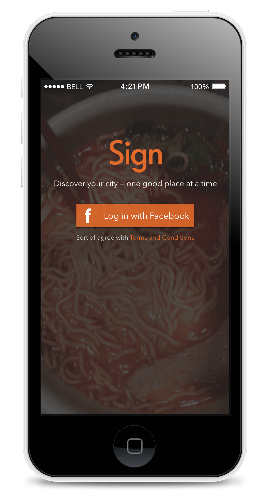

Sign
Discover your city — one good place at a time
Simply go about your day, and the app will notify you with a sign as you walk by one of the places on our curated list. No ratings, no overwhelming databases of businesses — just carefully selected spots we think you’d be glad to know.